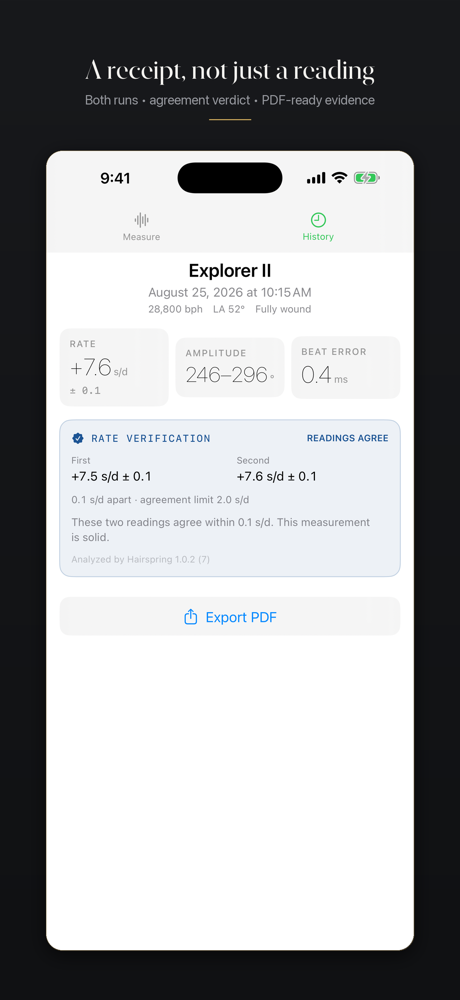

Why timegrapher readings change between tests
Two different numbers do not automatically mean the watch is faulty or the instrument is wrong. First ask whether the watch changed, the setup changed, or the measurement was noisy.
Quick answer: repeat the test without changing the watch's position or wind state. If the two readings agree within a limit that accounts for both runs' uncertainty, you have stronger evidence. If they do not, fix the setup and measure again before trusting either number.
Four reasons the same watch gives different readings
1. The watch is in a different position
Gravity acts differently on a mechanical movement dial up, dial down, crown down, and in the other vertical positions. Positional variation is real watch behavior. Compare repeated runs in the same position before comparing one position with another.
2. The mainspring delivered different torque
A freshly wound watch and the same watch a day later are not the same test condition. As the mainspring unwinds, balance amplitude can fall and rate can move. For a repeatability check, wind once, let the watch settle, and perform both runs close together.
3. The acoustic setup changed
A phone timegrapher hears a very quiet mechanical signal. Moving the watch a centimeter, changing the surface, touching the phone, or introducing another ticking clock can change which sounds are detected. Keep the watch beside the bottom microphone on the same hard surface and leave it untouched during each run.
4. One run contains more timing scatter
A rate is estimated from many detected beats, not read directly from one tick. If their timing is scattered, the fitted rate is less precise. A useful reading therefore needs both a rate and an uncertainty derived from that run's actual residual scatter.
Repeatability is not the same as accuracy
Repeatability asks whether successive measurements under the same conditions agree. Accuracy asks whether a measurement is close to a trusted reference. Two readings can agree with each other while both share the same bias. A repeatability check is valuable evidence, but it does not turn a phone microphone into a calibrated bench instrument.
The timegrapher rate is also a snapshot of one position and one state of wind. It is not a promise of what the watch will gain or lose during a full day on the wrist. If the trace or the other metrics are unfamiliar, start with the guide to reading a timegrapher result.
How Hairspring decides whether two rates agree
Hairspring starts the second run with a fresh analyzer and detector state. It does not reuse the first run's fitted grid, because shared state would make the measurements agree by construction.
For each rate, the app calculates a standard error from the timing fit. For two runs, it adds those errors in quadrature to estimate the uncertainty of the difference:
agreement limit = max(2 × combined uncertainty, 2.0 s/d)
The 2.0 s/d floor matters because a fit's standard error describes scatter inside one session. It cannot see small changes in placement, wind state, temperature, or the watch between sessions. Without that floor, two ordinary readings half a second apart could be mislabeled as a failure merely because both fits have tiny internal error bars.
| Example | Difference | Agreement limit | Verdict |
|---|---|---|---|
| +2.1 ± 0.4 +2.3 ± 0.4 s/d | 0.2 s/d | 2.0 s/d | Readings agree |
| +2.1 ± 0.4 +6.8 ± 0.5 s/d | 4.7 s/d | 2.0 s/d | Check again |
This rule is deliberately about whether the two measurements support each other. It is not a diagnosis of the watch. A disagreement tells you to re-seat the watch and repeat the test before drawing a conclusion.
These readings agree.
0.2 s/d apart · 2.0 s/d agreement limit
The difference is inside the agreement limit. Keep the pair as repeatable evidence under this setup.

A repeatable two-run test
- Wind the watch fully and let it settle for a minute.
- Choose one position and record it.
- Lay the phone flat on a hard surface; place the watch beside the bottom microphone.
- Run the first measurement without touching the setup.
- Start a fresh second measurement in the same position and wind state.
- If the readings agree, save the pair. If they do not, re-seat the watch and test again.
- Only after repeatability is established should you compare other positions or a later state of wind.
When different readings are expected
| Comparison | What changed | What it can tell you |
|---|---|---|
| Dial up vs. crown down | Position | Positional variation |
| Full wind vs. 24 hours later | Mainspring torque | Rate stability across the reserve |
| Bench vs. daily wear | Position, motion, temperature | Why a snapshot differs from lived accuracy |
| Same setup, back to back | As little as practical | Measurement repeatability |
Measure twice with Hairspring
Hairspring is an iPhone timegrapher for mechanical watches. It measures rate, beat error, live amplitude, and common beat rates; withholds results the signal cannot defend; and saves two-run verification receipts in History and PDF.
One $9.99 purchase. No subscription, account, ads, analytics, or automatic uploads.
Frequently asked questions
Why does my timegrapher give different readings for the same watch?
The watch's position or state of wind may have changed, the acoustic setup may have changed, or one run may contain more timing scatter. Repeat the test under controlled conditions to separate those causes.
How close should two timegrapher readings be?
There is no universal difference that proves agreement. The limit should account for the uncertainty of both runs and normal short-term variation between sessions. Hairspring uses the larger of twice the combined fit uncertainty and a 2.0 s/d floor.
Do two agreeing readings prove that a timegrapher is accurate?
No. Agreement demonstrates repeatability under those conditions, not calibration against a known reference.